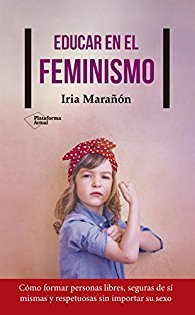

Educar en el feminismo
Reseña por Jorge I. Zuluaga

Ver reseña en GoodReads (necesita cuenta)
Tengo una hija y dos hijos y lamento mucho haber descubierto tan tarde -ya son personas adultas-, no solo este excelente libro, que ofrece una guía práctica relativamente completa para la educación en temas de género, sino el feminismo en general. El feminismo entendido, por supuesto, como corriente intelectual y movimiento social y político.
No creo equivocarme al afirmar que mi esposa, Olga Penagos -con quién, como he mencionado en otras reseñas similares, comparto todas estas lecturas-, de que ella compartiría esta idea. Es decir, de que la educación temprana de nuestra hija y nuestros hijos habría sido muy diferente de haber entendido mejor que los prejuicios y las identidades de género estereotipadas son producto de la manera como se les educa en el hogar.
Soy consciente por supuesto, como seguro lo estará Olga también, de que la responsabilidad por educar seres humanos feministas, es decir, personas conscientes de la existencia de una estructura de poder injusta (el patriarcado), que ha producido un marcado desbalance de privilegios entre, como mínimo, personas de ambos sexos, y en el que los hombres representamos, irracionalmente, el modelo genérico de ser humano (androcentrismo), esa responsabilidad no recae solamente sobre el hogar o las personas que criamos. Una cuota significativa de que vivamos en una sociedad injusta para más de la mitad de la población, reside también en las instituciones educativas, en los círculos de amistades y en la familia en un sentido más extenso.
Por todo esto, "Educar en el feminismo" es un libro indispensable y de lectura obligatoria para personas que participamos de esos procesos a todos los niveles.
El libro se divide en tres partes, a cuál más indispensable en esta dura pero excitante tarea de educar en el feminismo.
La primera se ocupa de introducir los conceptos generales de la teoría feminista, la historia, las definiciones de los conceptos básicos, pero también un resumen de una amplia colección de fenómenos sociales identificados por el feminismo y que deberían abordarse para crear una sociedad más justa para todas las personas. Una excelente introducción al feminismo, que convierte a este libro en mi primera elección para recomendar a quién vaya a comenzar esta aventura intelectual y personal.
La segunda parte se enfoca más en la educación, en las problemáticas de género que deberían abordarse usando una perspectiva de género. Esta parte ofrece una interesante colección de tablas, sugerencias y ejercicios para hacer con jóvenes. Como lo dije antes, lamento mucho que no hayamos descubierto antes este libro para aplicarlo en la educación de nuestras criaturas.
La tercera y última parte, una de las que más me impresiono, se ocupa de la relación entre chicos y chicas, como la llama Iria Marañón, su autora, es decir los temas del amor romántico, la sexualidad y el maltrato, que está íntimamente relacionado con los dos anteriores.
Como participante activo del patriarcado -en rol de opresor y de privilegiado (no me siento muy orgulloso de reconocerlo, pero debo hacerlo)-, el tema del amor y las relaciones sexuales siempre me ha resultado particularmente difícil de digerir en los libros de feminismos que he tenido la oportunidad de leer. Como a cualquiera le pasaría, creo yo, descubrir que la mayoría de las cosas que hemos normalizado en la sociedad patriarcal sobre estos temas están, cuando se los lee a la luz un análisis más cuidadoso y que pone la atención en las personas menos privilegiadas -en su inmensa mayoría, mujeres- te sacude. Identificar, por ejemplo, que la mayoría de tus comportamientos en estas materias han obedecido esencialmente a falsas creencias, o peor, la ausencia casi total de conocimiento, es realmente duro.
Lo hemos conversado con Olga, y la verdad es que entre más leemos de feminismos, más vergüenza sentimos -muy especialmente yo- por quiénes hemos sido. No sé por dónde empezar a disculparme. Aunque si que sé por quién empezar.
Como lo exprese en una reseña anterior, espero que la consciencia que despierta en mi leer y aprender de feminismos no haya llegado demasiado tarde. Que en lo que me queda de vida, si no puedo evitar algunos comportamientos machistas y sesgos sexistas -que como cualquier vicio son muy difíciles de erradicar- al menos sea bien conscientes de ellos. Sobre todo, espero que me alcance la vida para pedir disculpas a tiempo a las personas a las que haga daño -por acción u omisión- por gozar de privilegios que no era consciente que tenía.
¡La lectura continúa!